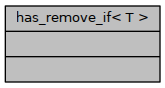

has_remove_if< T > Struct Template Reference
#include <test_traits.hpp>
Inherits integral_constant< bool, has_member_remove_if< T >::val >.
Collaboration diagram for has_remove_if< T >:

Detailed Description
template<class T>
struct has_remove_if< T >
Definition at line 50 of file test_traits.hpp.